DRKB Explorer
Упражнения
01.01.2010
Упражнение 13: выравнивание компонент
В данном упражнении мы продемонстрируем, как выравнивать компоненты. Например, есть шесть пронумерованных строк текста.
| 1. | в начале, бросьте несколько компонент Text на страницу. В данном примере это пронумерованные строки 1-6; |
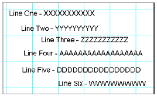
| 2. | строки два, четыре и пять должны быть выровнены. Строки три и шесть также должны быть выровнены; |
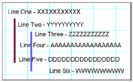
| 3. | выберите строку два. Это задаст первичный компонент, относительно которого будут выравниваться остальные; |
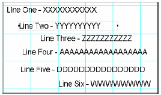
| 4. | удерживая клавишу shift, выберите строки четыре и пять, которые будут выровнены относительно строки два; заметим, что появилась граница с маркерами серого цвета; |
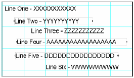
| 5. | поскольку все компоненты уже выбраны, нажмите на иконку Align Left Edges на панели выравнивания. Заметим, что все три компонента выровнялись по левому краю; |
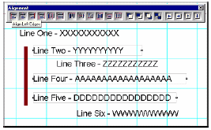
| 6. | что бы посмотреть, как работает выравнивание, нажмите иконку Align Right Edges на панели выравнивания; |
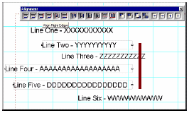
| 7. | пройдитесь по оставшимся функциям панели выравнивания и посмотрите, как они работают; |
| 8. | попробуем теперь выравнить второй набор строк. Сначала выберите первичный компонент, как базу для выравнивания, в данном случае, это строка три; |
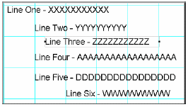
| 9. | затем выберите другие компоненты, которые Вы хотите выравнить, удерживая клавишу shift, выберите строку шесть; |
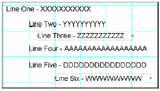
| 10. | затем нажмите на иконку the Align Left Edges для выравнивания компонент. |
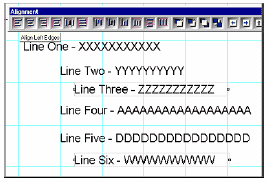
Упражнение 14: порядок компонент
Для изменения порядка компонент по Z-оси, должны использоваться иконки на панели выравнивания.
| 1. | чтобы начать упражнение, нам нужны компоненты на странице. Это могут быть любые компоненты. В данном примере используются прямоугольник, овал и круг; |
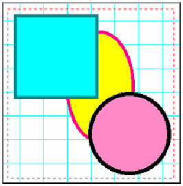
| 2. | сначала выберите компонент, который будет перемещать. В примере будем перемещать прямоугольник за овал. Посмотрим в дереве проекта размещение компонента Rectangle; |
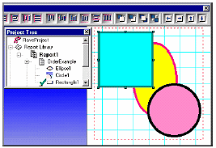
| 3. | как только прямоугольник будет выбран, нажмите иконку Move Behind на панели выравнивания. Заметим, что после нажатия прямоугольник еще никуда не поместился, но в дереве проекта уже сменил свою позицию на шаг выше; |
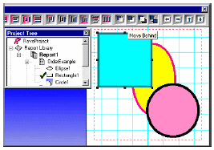
| 4. | теперь нажмите на иконку Move Behind button еще раз. Прямоугольник переместился и в дереве проекта на странице за овал; |

| 5. | для второго компонента, выберите круг и нажмите на иконку Move Behind. Круг переместился по дереву ин странице за овал; |
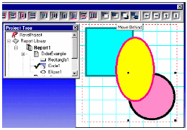
| 6. | щелкните по иконке Move Behind еще раз и заметьте, что круг перемещается по дереву, но остается сзади овала; |
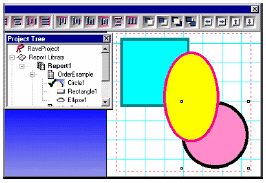
Упражнение 15: привязка к сетке
Привязка к сетке перемещение относится к перемещению и изменению размера компонент к узлам сетки на странице.
| 1. | сначала, вызовите диалог Preferences, пункт Preferences меню Edit; |
| 2. | выберите закладку Default и посмотрите в область Grid Spacing; |
| 3. | В Grid Spacing смените, значение на .02. затем посмотрите на область, называемую Draw Grid Every; |
| 4. | в Draw Grid Every, введите 1 line (напечатайте или используйте выпадающий список). Draw Grid Every 1 line, будет показывать каждую строку сетки. Если это сменить на Draw Grid Every 3 lines, то будет показана только каждая третья строка сетки; |
| 5. | затем перейдите в меню Project и выберите New. Это создаст новый проект, также и новую страницу отчета, которая будет базироваться на предпочтениях, которые мы сменили в предыдущих шагах. Помните, что линии сетки используются только для разработки отчета и не показываются при его исполнении; |
| 6. | прейдите в панель дизайнера и нажмите на иконку Snap To Grid; |
| 7. | теперь бросьте прямоугольник на страницу; |
| 8. | затем перемещайте прямоугольник и обратите внимание, что прямоугольник перемещается только по сетке. Попробуйте сделать тоже самое кнопками перемещения. |
| 9. | опять перейдите в панель дизайнера и нажмите на иконку Snap To Grid, для отключения привязки; |
| 10. | пробуйте перемещать прямоугольник и обратите внимание, что теперь прямоугольник перемещается и между узлами сетки. |
Упражнение 16: изменение размера линии и цвета прямоугольника
| 2. | бросьте прямоугольник на страницу; |
| 3. | посмотрите на панель палитры цветов. Обратите внимание, что на конкретных цветах есть символы 1 и 2, которые указывают первичный и вторичный цвета; |
| 4. | что бы сделать изменение цвета более заметным в примере, мы изменим ширину линии прямоугольника. Перейдем на панель редактора. Выберем прямоугольник. Затем изменим в выпадающем списке толщину линии. В примере сменено с hairline на 2.25 пункта; |
| 5. | Щелкните левой кнопкой мыши на любом цвете в панели цветов. В данном примере был выбран цвет Olive. Заметьте, что цвет границы сменился на оливковый цвет. Также обратите внимание, что изменился первичный цвет. Первичный цвет определяет цвет границы; |
| 6. | Щелкните правой кнопкой мыши на любом цвете. В примере был выбран цвет Blue. Заметим, что прямоугольник закрасился синим цветом. Также заметим, что изменился вторичный цвет. Вторичный цвет определяет цвет заливки. |
Упражнение 17: смена шрифтов
1. создайте новую страницу отчета;
2. бросьте на нее четыре компоненты Text;
3. выберите компонент и посмотрите на панель шрифтов; 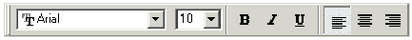
4. в выпадающем меню отображаются имена шрифтов, выберите подходящий шрифт;
5. перейдите на следующий компонент, и повторите шаги 3 и 4. повторите это же для оставшихся компонент;
6. Также попробуйте изменять размеры шрифтов. И конечно атрибуты Bold, Italic и Underline;
7. Три оставшихся кнопки управляют выравниванием влево, вправо и по центру. Попробуйте поработать и с ними.